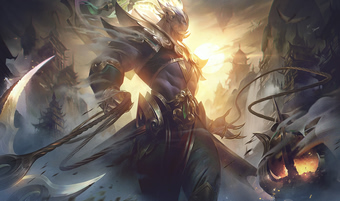

Thresh kinézetei

1. Mélytengeri Thresh
Ha valóban létezett is a habok alatti királyság, már biztosan réges-rég az enyészeté. Mi mással magyarázhatnánk a partokat kísértő szellemeket? És hogyan zárhatná lelkeinket az a Thresh nevű... valami az elátkozott búvárharangjába?
2. 2013-as vb Thresh
A 2013-as vb ünneplése Észak-Amerikában

3. Vérhold Thresh
Thresh egy démon, akit a Vérhold éjszakáján idéztek meg. Kielégíthetetlen vágyat érez a kínzásra és gyilkolásra, amit a lámpásába gyűjtött ezernyi bosszúszomjas lélek táplál. Egész falvakat irt ki, a kiontott vér pedig évtizedekre bemocskolja a földet.
4. SSW Thresh
Mata győzedelmes Thresh-játékának tiszteletére, amelyet a 2014-es világbajnokságon mutatott fel.
5. Sötét Csillag Thresh
Thresh egy kozmikus rémálom, aki a mindent elemésztő Sötét csillagot imádja isteneként. Megfogadta, hogy az egész mindenséget feltálalja neki, amíg nem marad anyag, idő és gondolat a világban. Ha semmi sem marad hátra, a feladata véget ér, és belevetheti magát a szingularitásba, hogy eggyé váljon az univerzum végével.
6. Párbajhős Thresh
Thresh egy ősi, gonosz lény, aki a vadnyugatot járja. Kegyetlen arca beleégett minden élőlény agyába, akik rettegve várják a napot, amikor eljön a lelkükért. Ha megérkezik egy településre csak megnyúzott, rothadásnak indult testeket hagy hátra.

7. Pulzustűz Thresh
A Krónikások fejeként Thresh általában a színfalak mögül mozgatja az idő láncait, semmint hogy maga is belevetné magát az események folyamába. A legutóbbi események azonban arra késztették, hogy elhagyja ideiglenes fellegvárát, pulzustűz lámpása kíséretében.
8. Pulzustűz Thresh (Tekintély kiadás)
Egyre sokasodnak a paradoxonok, és mind több ügynök lázad fel az időrendőrség ellen, ezért a krónikások parancsnoka, Tresh úgy döntött, hogy saját kezébe veszi az ügyek irányítását. Nem hagyhatja, hogy a méltatlan betolakodók vagy az egyre erősebb Testőrök vegyék át az idő feletti irányítást.cc
9. FPX Thresh
Crisp diadalmas Thresh-játékának tiszteletére, amelyet a 2019-es világbajnokságon mutatott fel.
10. Lélekvirág Thresh
Thresh a megszállottság ősi démona, aki előszeretettel kínozza a szerinte hibát vétő, de még menthető emberek lelkét. Lelkeket gyüjtve járja a szellemvilágot, elcsalva a holtakat a megváltásukhoz vezető útról, hogy bezárja õket saját emlékeik börtönébe.
11. Elszabadult Thresh
Minél több lelket nyelt el a Romlás, Thresh lámpása annál fényesebben ragyogott. Tudatosan készült erre a pillanatra, amikor kiterjesztheti befolyását az Árny- szigeteken túlra a nála sokkal messzebbre elérő Ködön keresztül. Thresh gondosan előkészített terve sikerrel járt, és megszabadult a szigetek rabságából. Már el is felejtette, hogy milyen jó érzés, ha van saját bőre...
12. Acélsárkány Thresh
Az Acélsárkány akkor volt a legboldogabb, ha barlangjában fekhetett a kincsei között, ezért szüksége volt egy tehetséges segédre, aki új, ezoterikus drágaságokat szerez neki - és erre a feladatra Thresht szemelte ki. Thresh megtiszteltetésnek érezte, hogy segíthet, és parttalan szerzési vágya hamarosan megszállottsággá fajult. Most már semmi nem állhat az útjába, megszerzi, amit akar, miközben kegyetlenségére jótevője neve mögé bújva keres igazolást.
13. Pulzustűz Thresh (Tekintély kiadás, 2022)
Egyre sokasodnak a paradoxonok, és mind több ügynök lázad fel az időrendőrség ellen, ezért a krónikások parancsnoka, Tresh úgy döntött, hogy saját kezébe veszi az ügyek irányítását. Nem hagyhatja, hogy a méltatlan betolakodók vagy az egyre erősebb Testőrök vegyék át az idő feletti irányítást.

14. Holdcsászár Thresh
Egyesek uralkodásra születtek. Mások csak álmodoznak a dicsőségről, és fogalmuk sincs, miféle áldozatokkal jár! A birodalom MINDENNÉL fontosabb... még az alattvalók életénél is. Thresh császár máig utat mutat népének, örök biztonságba helyezve lelküket, bár a testük rég porrá lett. Egy nap meggyógyítja megtört birodalmát. Ehhez csupán egy jólelkű császárnő segítségére lesz szüksége.

15. Tél kegyeltje Thresh
Miközben Senna folytatta kutatását, a megkeseredett, dühōs Camille a nyomában járt. Camille elegáns, ám könyörtelen táncos volt, aki magára haragitott egy korábbi Hajnalcsillagot, és meg is kapta méltó büntetését - elvesztette a lábait. Új, felerősített végtagjai segítségével rajtaütött Sennán, és segítségül hívta bajtársait, Sylast és Thresh-t is. Megérkeztek a Sarki fény tolvajai.
16. Gondnok Thresh
Nem sok hely van, és még kevesebb ügynökség, amely felvenne egy etikai szempontból kifogásolható, koponyaképű, Thresh névre hallgató gondnokot, de Mundo nem is lenne milliárdos, ha nem ismerné fel a kínálkozó lehetőségeket. Ki lenne alkalmasabb a piszkos vagyon megtisztítására, mint egy démoni gondnok?
Ugrás az elejére